Part 2. The proposed Neuron model
2.1. Description of the neuron model used
- Each neuron N has a threshold θn
- Each neuron N receives input signal of intensity in
- When the input signal intensity in is greater than or equal to the neuron's threshold θn , then the neuron fires with output signal intensity On
2.2. In this neuron model, there are two types of neurons :
(i)
Binary neurons , which produce only binary output when activated;
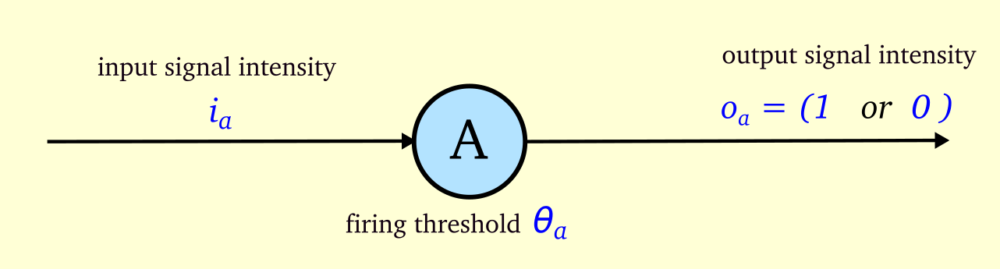
If ia ≥ = θa , then Oa = 1 ; else Oa = 0
(ii)
Non-binary neurons , which produce output signal intensity equal to input when activated;
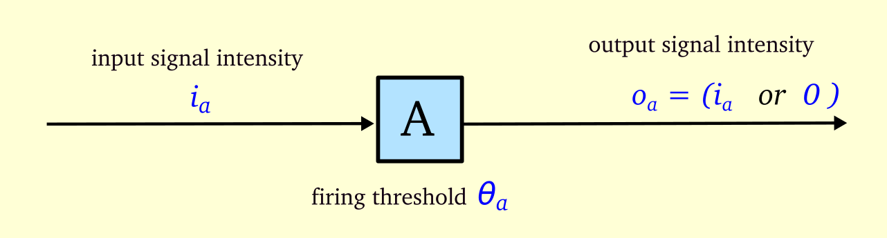
If ia ≥ = θa , then Oa = ia ; else Oa = 0
Binary neurons are represented as circles while non-binary neurons are represented as squares.
Interactive examples
Binary neuron
Non-binary neuron
2.3. Connection weights
- Connections may exist between two neurons and the strength of the connection is termed as 'connection weight'
- If neuron A has a downstream connection to neuron B , the 'connection weight' from A to B can be represented as wab
- When the neuron A sends an output signal Oa to neuron B, the signal is amplified by a factor wab
- When the input signal intensity ib is greater than or equal to the neuron B's threshold θb , then neuron B fires
- ie., the input signal to neuron B is : ib = Oa * wab
Connections in binary neurons :
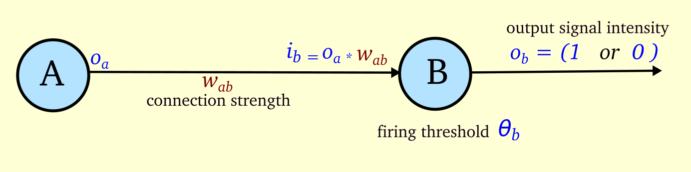
Input signal to Neuron B = output signal from A * ( connection strength from A to B)
ie., ib = Oa * wab
If ib ≥ θb , then Ob = 1 ; else Ob = 0
Connections in non-binary neurons :
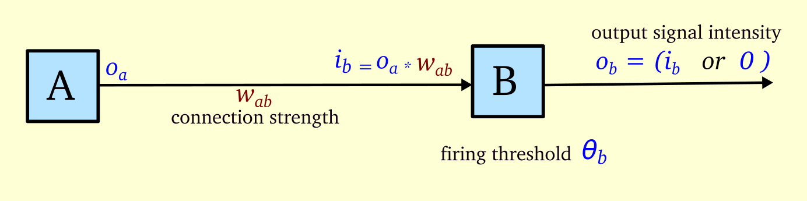
Input signal to Neuron B = output signal from A * ( connection strength from A to B)
ie., ib = Oa * wab
If ib ≥ θb , then Ob = ib ; else Ob = 0
Interactive example
Binary neuron with connections
Non-binary neuron with connections
2.4. Excitatory and Inhibitory connections
•
The signal from one neuron to another could be either excitatory or inhibitory.
•
An incoming inhibitory signal makes a neuron less likely to fire.
•
Excitatory connections have positive connection weights ,for example :
wab = 0.8
•
Inhibitory connections have negative connection weights ,for example :
wab = -1
Inhibitory connections :
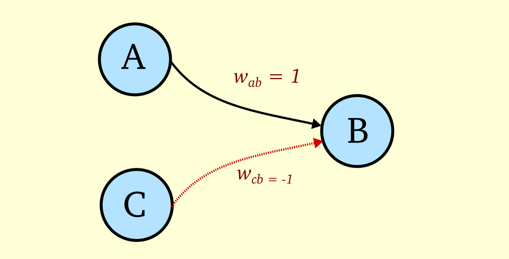
Let Neuron B’s firing threshold θb = 1
An excitatory connection wab exists from neuron A to neuron B with connection weight 1
An inhibitory connection wcb exists from neuron C to neuron B with connection weight -1
If neuron A and neuron C fire at the same time , with output intensity 1 each, then :
Input to neuron B : ib = ( Oa * wab ) + ( Oc * wcb)
ib = ( 1 * 1 ) + (1 * -1 )
ib = 0
(The excitatory signal from A is cancelled out by the inhibitory signal from C)
Since ib < θb , neuron B doesn’t fire.
Interactive example
Inhibitory connections
2.5. Synaptic steps in a Firing sequence
•
In a neural circuit, all neurons do not fire at the same time.
•
They fire in a sequential order, depending on the way they are connected to each other.
•
The upstream neurons fire first, followed by the downstream neurons.
Firing sequence : example 1
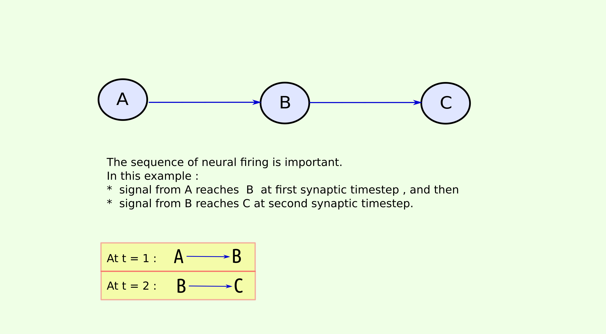
Sequence of firing :
Neuron A fires , then after a few milliseconds B fires , then after a few milliseconds C fires .
The signal from A reaches B in one "synaptic step"
The signal from A reaches C in two "synaptic steps"
Firing sequence : example 2 :
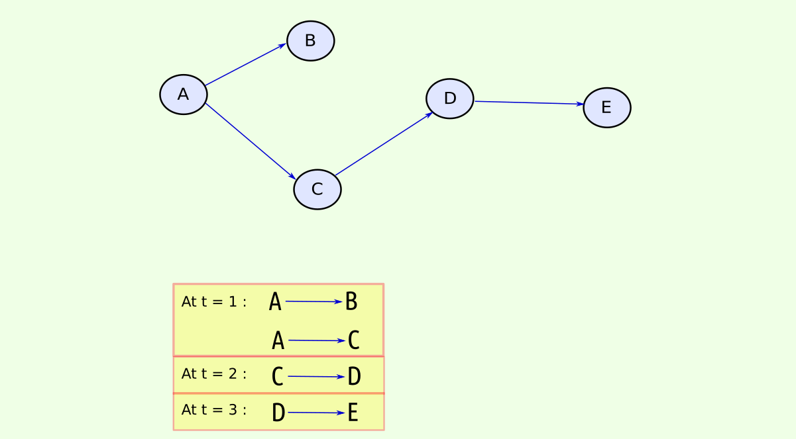
Sequence of firing :
Neuron A fires , then after a few milliseconds B & C fire at same time , then D fires, then E fires .
So it has taken 'three steps in time'(synaptic timesteps) for the signal from A to reach E
(assuming input to A,B,C,D,E cross their corresponding thresholds)
Interactive examples
Firing sequence : example 1
Firing sequence : example 2
2.6. Temporal connections : Timed delay in neurotransmission
•
In this model, we introduce connections that incorporate a precisely timed delay in neural-signal transmission.
• A signal through a
t+1 connection reaches the target neuron in one synaptic timestep
• A signal through a
t+2 connection reaches the target neuron in two synaptic timesteps.
• A connection can have upto
t+H connections, where
H is the maximum delay allowed for signal transmission for that neural circuit.
Timed delay in neurotransmission : example 1
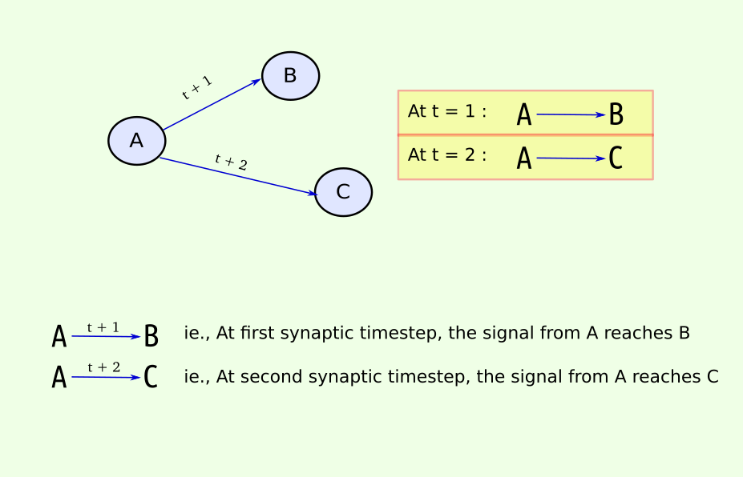
Timed delay in neurotransmission : example 2
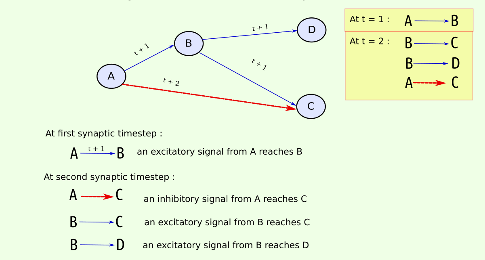
Sequence of firing :
Neuron A fires , then after a few milliseconds B fires , then after a few milliseconds C & D fire at same time .
Since there is a t+2 connection from A to C, the signal from A reaches C at the sametime the signal from B reaches C
2.7. Firing frame : Representing neuron states over time
•
To help with visualizing the firing states of neurons over time, we can tabulate the output signals of neurons over time.
•
In this table, which we term as "Firing Frame", we have time in Y axis and neuron names in X axis
•
Each cell represents the output signal intensity of a neuron at specific time
Firing frame : example 1 :
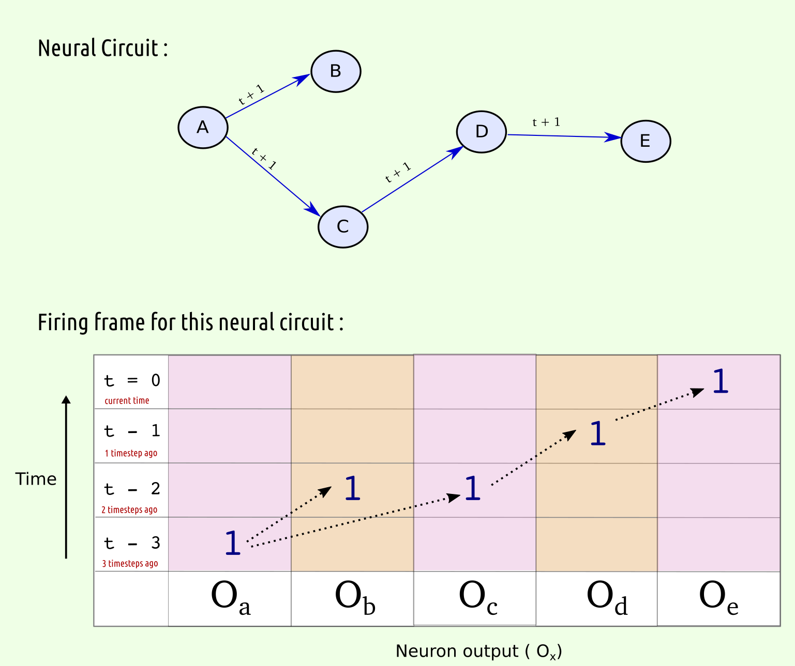
In this neural circuit composed of binary neurons, (assuming that firing thresholds are met)
the sequence of firing is : A fires first, then B & C fire at same time, then D fires , and then E fires.
The output of each of these binary neurons is 1 , which is entered in the cell corresponding to the time the neuron fired.
Firing frame : example 2 :
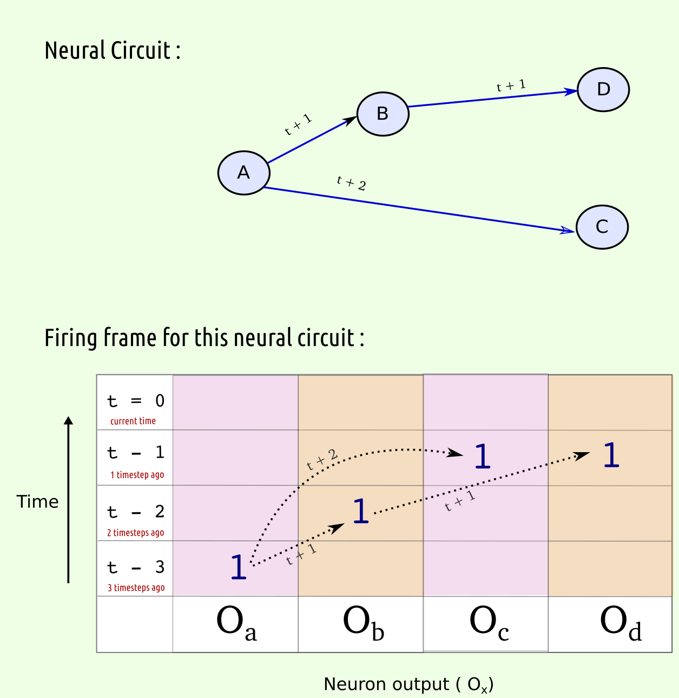
In this neural circuit, note that the connection from A to C is a t+2 connection,
so it takes two synaptic steps for the signal from A to reach C ,upon which C fires.
Interactive examples
Temporal connections with Firing Frame: example 1
Temporal connections with Firing Frame: example 2